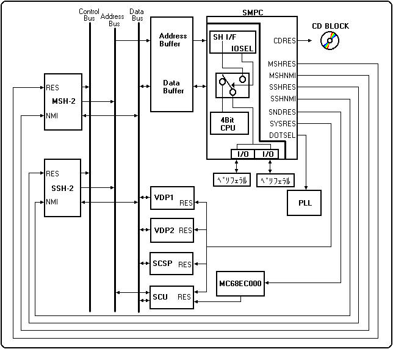

★HARDWARE Manual
★SMPCユーザーズマニュアル
★HARDWARE Manual
★SMPCユーザーズマニュアル
■ ｜
進む▼
SMPCユーザーズマニュアル
第１章 概要
■1.1 システム構成
- SMPCは、パワーON時のサターンシステムのリセット制御やリセットボタン押下時のマスタSH-2へのNMIリクエストを管理します。
また、SH-2からのコマンドによって各LSIのON/OFF、カレンダ時計の設定や取得、ペリフェラルからのデータ収集等を行います。
更にクロックチェンジコマンドによって、水平解像度を320ドットまたは352ドットに切り替えます。
図1.1 SMPCシステム構成

- SMPCには7ビットのパラレルI/Oポートが2組用意されています。
I/Oポートへのアクセスは、SMPC内部のファームウェアによってコントロールし、収集データをSMPCアウトプットレジスタ(OREG)に出力するSMPCコントロールモードとSH-2から直接アクセスできるSH-2ダイレクトモードの2つのアクセス方法を選択できます。
SMPCコントロールモードおよびSH-2ダイレクトモードの詳細は、それぞれ
第3章「◆SMPCコントロールモード」、
「◆SH-2ダイレクトモード」を参照してください。
なお、パワーON時にサターン内部の各ユニットは、以下の状態に初期化されます。
- ＜パワーON時の初期状態＞
- サウンドCPU OFF状態
- サウンドCPUにリセットが入っています。SNDONコマンドによりパワーオンベクタから動き出します。
- VDP1,VDP2,SCU,SCSP ON状態
- SH-2からアクセス可能な状態になっています。
- スレーブSH OFF状態
- スレーブSH-2にリセットが入っています。SSHONコマンドによりパワーオンベクタから動き出します。
- DOT SEL OFF状態
- PLL発振周波数が320モード(NTSC:26.8741MHz,PAL:26.6875MHz)となっておりVDP1,VDP2,SH-2はこの周波数で動作しています。CKCHG352コマンドにて352モード(NTSC:28.6364MHz,PAL:28.4375MHz)で動作します。
- CDブロックON状態
- SH-2からアクセス可能な状態になっています。
●機能
- SMPCは、大きく分けてRTC(Real Time Clock), SM(System Management), PC(Peripheral Control)の3つの機能を持っています。以下にSMPCの主な機能を示します。
- ＜SMPCの主な機能＞
- RTC(Real Time Clock)
- ・SH-2からの時刻設定および取得
- ・年月日、曜日、時分秒を自動更新
- (メインパワーOFF時のバッテリバックアップが可能)
- SM(System Management)
- ・サウンドCPUのON/OFF
- ・マスタSH-2、スレーブSH-2のON/OFF
- ・システムリセットの制御
- ・クロックの切り替え(PLL制御)
- ・パワーONリセット
- ・フロントパネルボタン押下でマスタS-2にNMIを要求
- PC(Peripheral Control)
- ・サターンペリフェラルインタフェース仕様のペリフェラルをサポート可能
- ・コントロールパッド、マウス等のペリフェラルデータを自動収集
- ・メガドライブペリフェラルもサポート
- (3ボタン、6ボタン、セガタップ等ただし、変換アダプタが必要)
●入力ぺリフェラル
- ◆セガサターン標準パット
- セガサターン用デジタル標準パットは、上、下、左、右、A、B、C、X、Y、Z、L、R、スタートの各ボタンを装備しています。
- ◆マルチコントローラ
- マルチコントローラは、セガサターン標準パットを互換性を保ちつつアナログキーおよび、及びアナログLRボタンを装備しています。
- 参考：STN-43「マルチコントローラユーザーズマニュアルVer1.00 」
- ◆ミッションスティック
-
- 参考：STN-34「アナログミッションスティックマニュアル」
- ◆レーシングコントローラ
-
- 参考：STN-38「レーシングコントローラマニュアル」
- ◆シャトルマウス
-
- 参考：STN-44「シャトルマウスの補足説明」
- ◆セガサターンキーボード
-
- 参考：STN-45「サターンキーボードの補足説明」
- ◆バーチャガン
-
- 参考：STN-41「バーチャガンユーザーズマニュアル Ver1.00」
■ ｜
進む▼
★HARDWARE Manual
★SMPCユーザーズマニュアル
Copyright SEGA ENTERPRISES, LTD., 1997